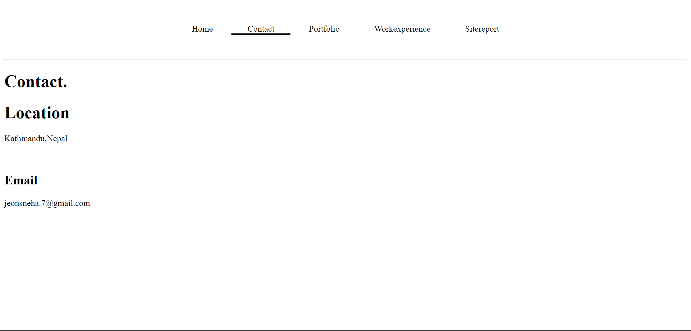

Learning the basics of web development, coding, design and debugging process has been an exciting and interesting journey.I gained knowledge on the value of responsive design and how to create websites that look stunning on various screen widths. I also picked up how to use programs like Git hub.
I made a through strategy of the website's layout and the content it would contain before I began the project.I first coded the basic features to create the website's html layout.Added a navigation bar so the user may reach the website's segments easily. After that,started designing the website using CSS. At first, my homepage had a short introduction to myself. A combination of purple and pink has been used as the background color to give the webpage a luxurious look. Animation is also kept on this page.
The websit's contact page was the next thing I worked on. My location, email address and phone number have all been added with their respective icons. In order to stay connected with me, a contact form has also been added here. It is mobile-friendly since this page has been made to be responsive.
Next, I worked on creating the portfolio section of the website. I uploaded ten pictures and positioned them relative to one another. The desktop view of the portfolio segment features five columns of photographs because it is also mobile-friendly ,the columns adjust in accordance with the screen size when the screen size decreases.
Finally, a job experience page with two columns has been created. This is also responsive since when the screen size is reduced, one column slides under another.
Overall,Learning the basics of web development, coding, design and debugging process was both a difficult and worthwhile experience.
My progress in making this website.
HOMEPAGE Before:
.png)
After:
CONTACT Before:
After:
PORTFOLIO Before:
After:
WORKEXPERIENCE Before:
After:
Homepage validation:
Contact validation:
Portfolio validation:
Workexperience validation:
.png)
Sitereport validation:
.png)
CSS validation:
.png)